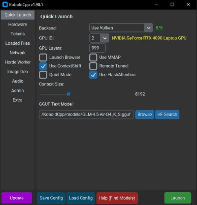

先选运行器，再选要加载的模型
KoboldCpp把模型运行器和浏览器界面放在可直接启动的程序中，用户下载适合系统的版本后，再选择自己的GGUF或其他兼容模型文件。它可用于故事写作、角色对话及本地接口调用，也带图像、语音和音乐入口。软件的便携形式减少的是安装周边环境的步骤，不是把模型本身变小或省掉下载。此次一点一二四版的公开发布说明增加媒体模型支持与交互便利；发行页面标注十月三十一日，部分资产也有当天时间戳，源码标签则更早形成，不能把提交时间当成全部功能向用户开放的时间。
KoboldCpp 1.124 · 开源 · 社区产品变化

KoboldCpp把模型运行器和浏览器界面放在可直接启动的程序中，用户下载适合系统的版本后，再选择自己的GGUF或其他兼容模型文件。它可用于故事写作、角色对话及本地接口调用，也带图像、语音和音乐入口。软件的便携形式减少的是安装周边环境的步骤，不是把模型本身变小或省掉下载。此次一点一二四版的公开发布说明增加媒体模型支持与交互便利；发行页面标注十月三十一日，部分资产也有当天时间戳，源码标签则更早形成，不能把提交时间当成全部功能向用户开放的时间。
新版本把audio.cpp的一部分模型接入内置音乐与语音流程。YuE2模板区分只加载音乐模型、搭配较小语言模型以及搭配更大语言模型：用户可以自己准备歌词，也可以让搭配模型生成。MusicUI同时新增Whisper转写标签，为需要参考文字的语音模型准备输入。这个链条把“参考音频还要去另一处转文字”放回同一套工具，但转写与生成仍是不同步骤，用户要查看文字是否与录音一致，再继续生成。发布说明列出多种声音克隆或指令控制模型，具体接受何种参考材料仍取决于加载的那一个。
主仓库说明内置KoboldAI Lite可编辑文本、保存故事并组织角色和场景，同时提供供其他应用连接的兼容端点。新版本也调整代理交互，加入MCP端点配置向导和多行粘贴，让已有代理接入工具或接收长文本时少一些手工格式处理。选择本地网页进行创作，与主动连接外部工具是不同使用方式；是否联网取决于启用的能力和接入对象，不能由“本地模型”四个字推断整个工作流离线。用户仍要管理模型文件、参数和代理工具的实际行为，程序不会因为统一了入口就自动知道每项任务的边界。
不同模型的大小、显存和计算需求不会因同在一套界面而相同；发布说明直接把大型歌词模型留给更大GPU。仓库也提供CPU、GPU及部分卸载路径，所以能加载与可接受的等待时间是两回事。主程序与Lite界面采用AGPL第三版，捆绑组件保留各自许可，下载的模型还需要分别查看权重条款。Reddit原帖链接到版本发布，本次只读到四条可见评论，其中有人称它适合初学者，这不构成采用率或质量评测。这里可确认的是输入入口和支持范围增加，未做独立音质试听、吞吐测试，也未确认所有组合在同一机器上同时运行的体验。